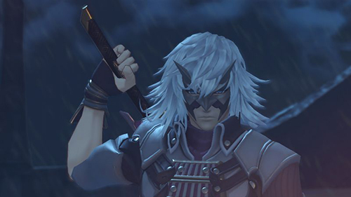
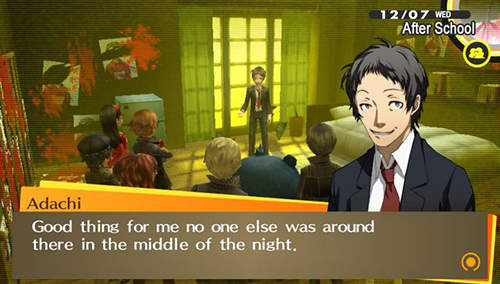
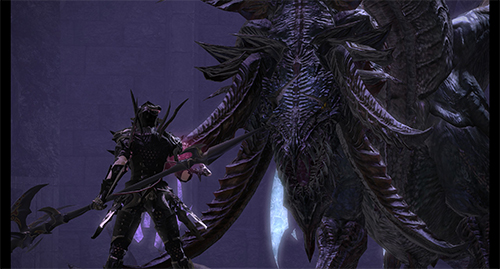

Egil är en av de främsta antagonisterna i Xenoblade Chronicles. Han är en Machina, ledaren för Mechon-armén, skaparen av den konfronterade mechonen, och hjärnan bakom deras invasion av Bionis. Miqol säger att han var snäll och hjälpsam mot de fattiga och modiga innan han svurit hämnd mot Bionis. Egil visar sig också vara väldigt stark för att han i strid på Agniatha då Shulk stöter på honom och det verkar inte ha någon effekt. Han plockar upp Shulk vid ansiktet och drar Monado från axeln.

Jin är en antagonist i Xenoblade Chronicles 2. Han är chef för den hemliga organisationen Torna som vill hitta och fånga Pyra. Han utstationeras av Malos. Han är en mystisk maskerad svärdsman med ett sympatiskt temperament, även om han kommer att göra vad som krävs för att uppnå sina mål.

En glad och jovial detektiv, Adachi fungerar ofta som berättelsens comic relief. Liksom Shuji Ikutsuki, gör han hemska skämt och ordvitsar som bara någon utan en humoristisk känsla skulle tycka om. Han sig själv som Dojimas "slav" och klagar över den arbetsbelastning som hans partner högtar på honom. Adachi visar sig vara ganska lat, till och med uppmuntrande Nanako att ta genvägar i hennes läxa. Adachi misslyckas ofta (och ibland med vilseledning) utredningen av polisundersökningen till undersökningsgruppen, mycket till sin egen skull. Han kan ses hängande runt Junes Stormagasin, vanligtvis "dödar tid". Hans handlingar i offentligheten döljer dock sina vanliga tankar och önskningar.
Hans sanna natur är det för en sadistisk misantrop som manipulerar andra för sin egen nöje. Han tycker att allt verkar vara ett spel och bry sig om konsekvensen av hans handlingar. När han var yngre brydde sig hans föräldrar bara om hans betyg i skolan, vilket resulterade i att han är utanför eftersom att inte har många vänner. På grund av det hårda arbetet i hans ungdom, anser Adachi att han borde ha rätt till framgång i livet. På grund av hans lott i livet skyller Adachi allt på samhället för de olyckor som beföll honom.
Precis som hur Yosuke var, blev Adachi uttråkad av det liv han bodde i den tysta stan Inaba. Det var det som motiverade honom att inleda sitt katt-och-musspel var att han helt enkelt ville lyfta upp sin tristess, han säger att han fick en "kick" när han tryckte in Mitsuo Kuboin i midnattkanalen. Han ser sina skäl till vad han gör som rättfärdig och säger att han vill rädda och förhindra mänskligheten från smärta, lidande, tristess och förtvivlan i livet.

Nidhogg är en stor wyrm i Final Fantasy XIV, en av Midgardsormrs första son.
Nidhogg är en av de sju wyrms födda från Midgardsormr, som sägs ha länge terroriserat Coerthas sedan Ishgards grundande, med hjälp av Dragonsongen att samla Dravanian Horde till krig de senaste tusen åren.Malos är en antagonist i Xenoblade Chronicles 2. Han är den andra befälhavaren för den hemliga organisationen Torna, som leds av Jin, och vill hitta och fånga Pyra. Han är en lång man med ett vildt och grovt temperament (i motsats till Jin), men är också en extremt skicklig driver på slagfältet. Han åtföljs av sin Special Blade, Sever.Akechi är en gymnasieelever som bedriver ett detektivföretag. Hans förmågor som detektiv har blivit allmänt hyllade, eftersom han inte bara har löst många fall utan också kan hantera personer från utredningsorganet smidigt. Hans snygga drag gör honom till allmänhetens uppmärksamhet, och människor kommenterar honom som "Detektivprinsens andra advent".
Bakom hans popularitet är han ganska ensam och längtar efter att bli älskad. Han övergavs av sin far, förlorade sedan sin mamma till självmord, och hade aldrig nära vänner. Han fördes över fosterhemmet som en föräldralös och har utvecklat en mycket mer utsliten världsutsikt än vad han ursprungligen lät på, även kallar sig ett oönskade barn. Han har en desperat önskan att bli sedd, vilket han är uppriktig om att vara den primära drivrutinen för sina handlingar som detektiv. Han har också ett narcissistisk element till sin personlighet, som önskar andra att se honom som en hjälte och de som motsätter sig honom som skurkarna. Akechi hävdar att han omsorgsfullt har skapat sin offentliga bild i hopp om att det skulle få folk att acceptera honom. Han har endast allmänhetens stöd om han upprätthåller företeelsen genom att vara en karismatisk idoldetektiv, och hans fans är snabba att vända ryggen honom om han gör misstag, till exempel när Phantom Thieves segrade över Kaneshiro och Medjed.Handsome Jack är den främsta antagonisten till både Borderlands 2 och Tales från Borderlands och deuteragonisten i Borderlands: Pre-Sequel. Han har övertagit Hyperion-bolaget, förklarat sig som diktator för Pandora, och stulit all kredit för att hitta The Vault, så långt som att hävda ansvaret för att döda Destroyer. Ett nytt team av Vault Hunters har till uppgift att döda Jack och återställa (relativ) fred till Pandora.
Jack har en geostationär månebas (i form av en 'H') i Lagrange-punkten mellan Pandora och Pandoras geostationära måne Elpis. Det fungerar som en hyllning till hans ego samt en försörjningsbas, från vilken han kan skicka varor och trupper ner till Pandora. Satelliten har också en lins som tillåter Jack att hålla koll på Vault Hunters hela tiden.Zanza var ursprungligen en människa som heter Klaus och hänvisas av hans vördatorer som Lord Zanza, är den sanna antagonisten i Xenoblade Chronicles. Han fanns före skapandet av spelets universum. Långt före händelserna i spelet, säger Zanza Arglas (en veriasion av zanza), en jätte från Bionis, som därefter blir inpärrad av High Entia på Prison Island. Han avslöjar att han är skaparen av Shulks vapen, Monado Klaus var ursprungligen en mänsklig forskare som arbetar på en rymdstation. Han utvecklade ett experiment för att skapa ett universum och därmed väcka mänskligheten närmare gudomligheten. Trots att hans kollega försökte avskräcka honom fortsatte Klaus med experimentet. Han var i slutändan framgångsrik men förstörde det ursprungliga universum i processen. Han och hans kollega blev därefter reinkarnerade i det nya universum som respektive Bionis och Mechonis gudar.